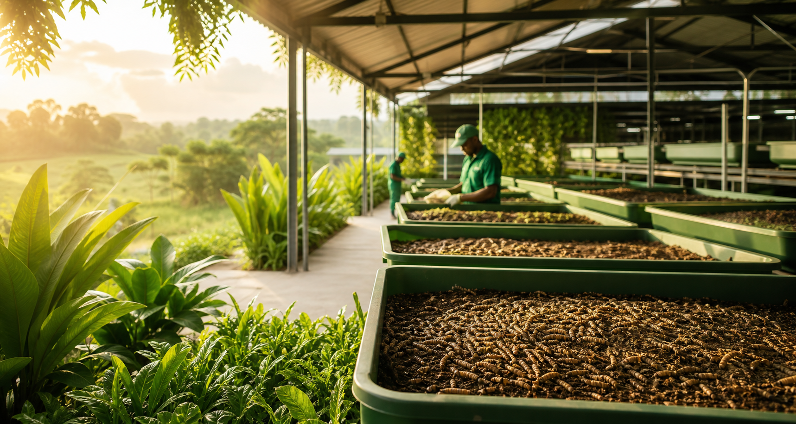
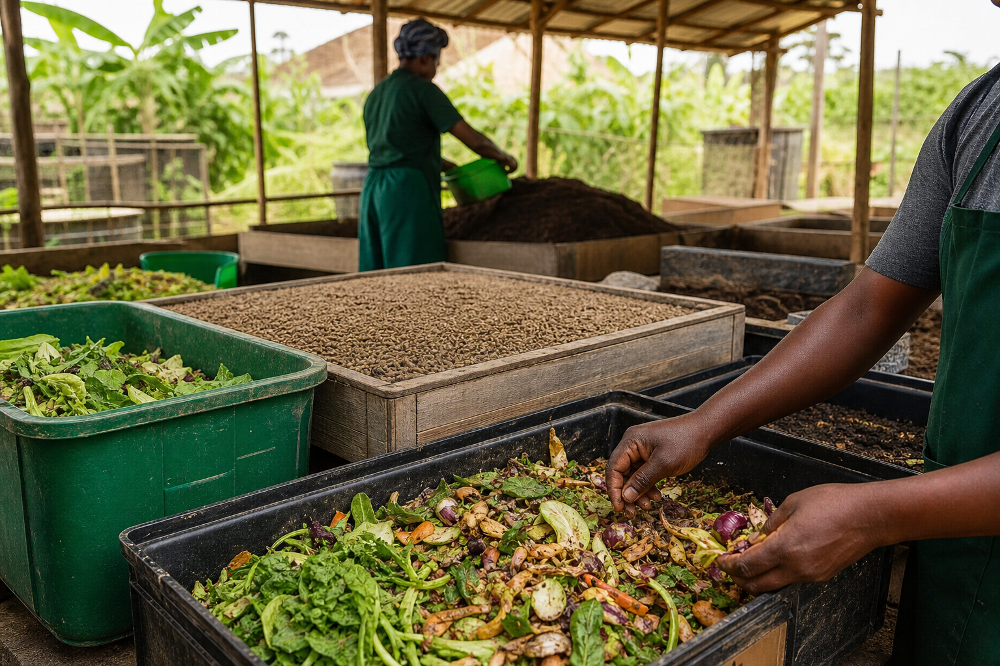
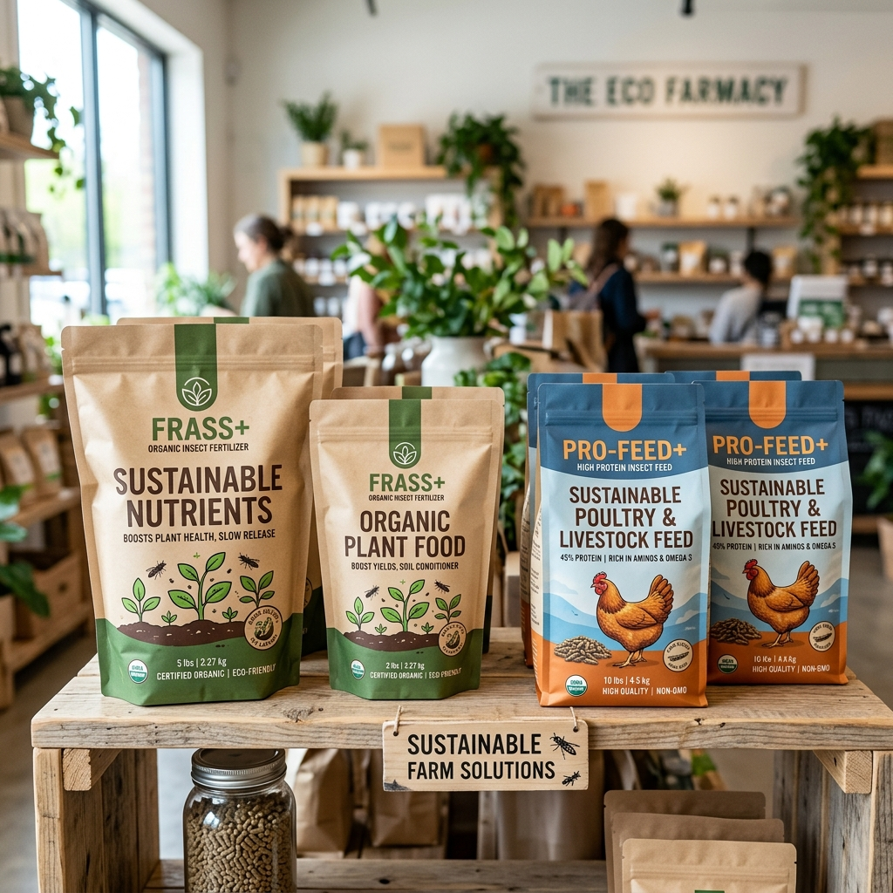

Our Mission
Empower youth and women with resilient farming skills while promoting sustainable waste conversion and food security.
Entomopreneurship Training and Empowerment Program
ETEP equips youth and women with practical Black Soldier Fly farming skills that turn local waste streams into protein feed, frass fertilizer, and income.
Farming, feed & fertilizer systems
Training hubs across Abuja & Kaduna
Skills, sustainability & enterprise
Entomopreneurship Training and Empowerment Program (ETEP) is a flagship initiative dedicated to food security, waste management, and economic empowerment through Black Soldier Fly farming.
Participants learn practical BSF production, biogas awareness, and organic fertilizer creation through hands-on training. The program is driven by SHARK Integrated Farm, a climate-centric agribusiness.
First Baptist Church Complex
Kagarko Local Government
Empower youth and women with resilient farming skills while promoting sustainable waste conversion and food security.
Become a leading model for waste-to-wealth enterprise, where communities turn environmental challenges into productive livelihoods.
Blend classroom learning, farm demonstrations, product development, and mentoring for sustainable micro-enterprise growth.
A practical pathway for learners, community groups, and farm teams to build productive BSF systems from setup to sales.
Step-by-step instruction in larvae rearing, waste preparation, harvesting, and farm hygiene.
Guidance on starter systems, production planning, costing, and selling BSF-based products.
Support for converting organic waste into feed, fertilizer, and circular farm inputs.

Hands-on learning in larvae rearing, farm hygiene, feed preparation, harvesting, and small business setup.

Turning household, market, and farm waste into useful farm inputs while reducing environmental pressure.

Developing protein feed, organic fertilizer, and value-added products for poultry, aquaculture, and crops.
High-protein live feed for fish and poultry operations.
Stable, nutrient-rich feed ingredients for livestock diets.
Organic soil amendment that supports healthier crops and improved yields.
A versatile product for feed formulation and value-added processing.
"Through this program, I turned waste into wealth, creating jobs in my community."
Samsom John, Youth Leader in Agriculture
Katugal, Kaduna State
Reach out to SHARK Integrated Farm and ETEP for training, product enquiries, and community partnership opportunities.